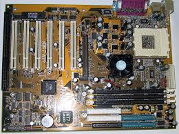

Socket A tabanlı, AMD Athlon/Duron işlemciler için tasarlanmış klasik bir anakart. Overclock özellikleriyle döneminde popüler olmuştur.
| Özellik | Değer |
|---|---|
| Soket | Socket A (462) |
| Chipset | VIA KT133 |
| RAM | 3x SDRAM DIMM (1.5GB’a kadar) |
| PCI | 6x PCI, 1x AGP 4x, 1x ISA |
| Depolama | ATA-100 IDE (4x IDE cihaz desteği) |
| Ek Özellikler | SoftMenu III BIOS, overclock desteği |